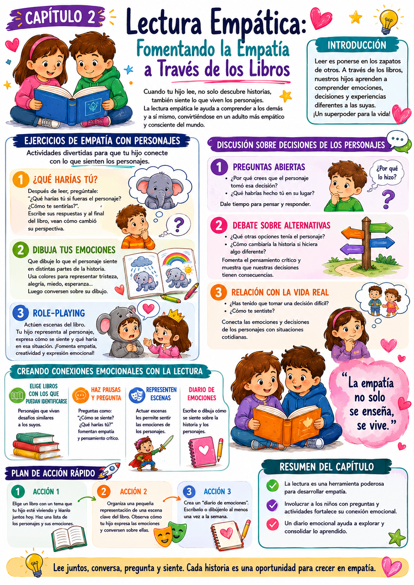

Cuando tu hijo se adentra en un libro, no solo está aprendiendo a leer — está explorando experiencias ajenas y desarrollando algo que lo va a acompañar toda la vida: la capacidad de entender cómo se siente otra persona.
Fomentar la empatía a través de la lectura es uno de los regalos más grandes que podés darle. Un chico que aprende a ponerse en los zapatos de los personajes aprende a ponerse en los zapatos de las personas reales que lo rodean.
Ponerse en los zapatos
Ejercicios para que el chico imagine cómo se siente el personaje — y qué haría él en su lugar.
Decisiones de personajes
Analizar por qué los personajes hacen lo que hacen — y qué consecuencias tienen esas decisiones.
Conexión con la vida real
Relacionar las experiencias de los personajes con situaciones que el chico vive — eso es lo que consolida la empatía.
La empatía como superpoder
Un chico empático no solo comprende mejor los libros — comprende mejor a las personas. Esa habilidad lo va a acompañar en la escuela, en las amistades y en toda su vida social.
✅ Antes de arrancar

Tuki te dice:
La lectura empática no se trata solo de entender libros — se trata de comprender la vida misma. Cada historia es una oportunidad de ensayar la empatía en un espacio seguro.
Para entender cómo funciona la lectura empática, hay que entender qué pasa cuando un chico se identifica con un personaje — y por qué eso tiene un impacto que va mucho más allá de la comprensión lectora.
Identificación con el personaje
Cuando el chico se ve reflejado en un personaje, baja la guardia y se abre emocionalmente. Esa apertura es lo que hace posible el aprendizaje empático.
Espacio seguro para ensayar
Los libros permiten "ensayar" situaciones difíciles en un entorno seguro. El chico puede explorar cómo reaccionar ante el miedo, la pérdida o el conflicto sin consecuencias reales.
Diversidad de perspectivas
Los libros con personajes de diferentes contextos amplían el mapa mental del chico sobre cómo es el mundo — y cómo se sienten las personas que son distintas a él.
Transferencia a la vida real
La empatía entrenada en los libros se transfiere a la vida cotidiana. Los chicos que leen mucho suelen ser más capaces de entender y validar los sentimientos de otros.
Qué libros elegir para desarrollar empatía
Buscá libros con personajes que enfrenten desafíos similares a los que vive tu hijo — miedo, soledad, conflictos con amigos. También libros con personajes de realidades distintas a la suya — eso amplía la empatía hacia lo diferente.
Tuki te dice:
No hace falta un libro "serio" para desarrollar empatía. Un cuento simple sobre un elefante que se siente solo puede generar una conversación más profunda que muchos libros "importantes".
Tres estrategias concretas para desarrollar la empatía a través de la lectura — ejercicios para ponerse en los zapatos del personaje, análisis de decisiones y conexión con la vida real.
Ejercicios de empatía con personajes
Ponerse en los zapatos · Expresión emocional · Cualquier cuento
Tres ejercicios simples que se pueden hacer con cualquier libro y que activan la empatía de forma progresiva.
Ejercicio 1 — ¿Qué harías vos?
- 1Después de un fragmento donde el personaje siente algo fuerte, preguntá: "¿Qué harías vos si fueras ese personaje? ¿Cómo te sentirías?"
- 2Anotá sus respuestas. Al final del libro, comparen cómo cambió su perspectiva sobre el personaje.
Ejercicio 2 — Dibujá las emociones
- 1Pedile que dibuje lo que siente el personaje en distintos momentos de la historia usando colores.
- 2Al terminar, preguntá por qué eligió esos colores — esa conversación es muy reveladora.
Ejercicio 3 — Role-playing
- 1Elegí una escena difícil del libro y actuenla juntos — él es el personaje, vos el resto.
- 2Preguntale cómo se sintió siendo ese personaje y qué haría diferente.
Discusión sobre decisiones de personajes
Pensamiento crítico · Alternativas · Post-lectura
Analizar por qué los personajes hacen lo que hacen es una de las formas más poderosas de desarrollar empatía y pensamiento crítico al mismo tiempo.
- 1Preguntas abiertas: "¿Por qué creés que el personaje tomó esa decisión? ¿Vos qué habrías hecho?" — dejá tiempo para pensar antes de responder.
- 2Debate sobre alternativas: "Si el personaje hubiera hecho algo diferente, ¿cómo cambiaría la historia?" Esto activa el pensamiento sobre consecuencias.
- 3Conexión con la vida real: "¿Alguna vez tuviste que tomar una decisión difícil parecida? ¿Cómo te sentiste?" Esto valida su experiencia y profundiza la empatía.
Ejemplo concreto
El elefante decide no decirle a nadie que está triste. Preguntás: "¿Por qué creés que no se lo contó a nadie? ¿Vos alguna vez guardaste algo triste para no preocupar a alguien?" Esa conversación vale más que diez páginas.
Crear conexiones emocionales con la lectura
Selección de libros · Diario emocional · Representación
Para que la empatía se desarrolle de verdad, el chico necesita libros con los que pueda identificarse — y un espacio para procesar lo que siente.
- 1Elegí libros que resuenen: si está lidiando con el miedo a la oscuridad, buscá un cuento donde el protagonista enfrente ese miedo. La identificación es instantánea.
- 2Pausas estratégicas: "¿Cómo crees que se siente ahora? ¿Qué harías vos?" — esas preguntas durante la lectura mantienen viva la conexión emocional.
- 3Representación post-lectura: actuá escenas clave. Lo que el chico vive desde adentro de un personaje se queda grabado de una forma que la lectura pasiva no logra.
- 4Diario emocional: un espacio donde pueda escribir o dibujar cómo se sintió con la historia. Con el tiempo, ese diario se convierte en un mapa de su desarrollo empático.
Tuki te dice:
La clave no es hacer todas las actividades — es elegir una y hacerla bien. Una conversación genuina después de la lectura vale más que tres actividades apresuradas.
Tres acciones concretas para esta semana — una para durante la lectura, una para después y una para construir el hábito.
Acción 1 — Libro que resuene
Elegí un libro que trate un tema que tu hijo esté viviendo en este momento — miedo, amistad difícil, cambios en la familia. Leánlo juntos y hacé una lista de los personajes y sus emociones.
Acción 2 — Representación de una escena clave
Después de leer, elegí una escena donde el personaje enfrenta algo difícil. Actuenla juntos — él es el personaje, vos el contexto. Al terminar, preguntale cómo se sintió siendo ese personaje y qué haría diferente.
Acción 3 — Diario emocional semanal
Establecé un momento fijo por semana para revisar juntos el diario de emociones. Que sea un momento tranquilo — sin apuro. Escuchá sin interrumpir y validá lo que expresa.
- 1Corregir su perspectiva emocional. Si el chico dice que el personaje está "enojado" y vos creés que está "triste", no lo corrijas — explorá su versión. Puede ser tan válida como la tuya.
- 2Elegir libros que no conectan. Un libro que no resuena no va a generar empatía. Si después de dos capítulos no hay conexión, cambien de libro — sin culpa.
- 3Forzar la representación. Si el chico no quiere actuar, no insistas. Hay otras formas de procesar — el dibujo, la conversación, el diario.
- 4No validar sus emociones. Si expresa algo inesperado sobre la historia, no lo descartés. Escuchá y preguntá más — esas respuestas son ventanas a su mundo interior.
- 5Separar la lectura de la vida real. La empatía literaria solo se consolida cuando se conecta con la experiencia cotidiana. No olvides el puente entre el personaje y su propia vida.
Tuki te dice:
¡Muy bien! En el Cap 3 vemos algo muy especial: cómo los cuentos pueden ayudar a sanar emociones difíciles que el chico no sabe cómo expresar de otra forma.
Esta infografía resume las estrategias de lectura empática y los ejercicios para ponerse en los zapatos de los personajes.

Infografía · Bono 2 Cap 2 — Lectura Empática
Tuki te dice:
¡Terminaste el Cap 2! En el Cap 3 vemos cómo los cuentos pueden ser una herramienta terapéutica para ayudar a tu hijo a procesar emociones difíciles.